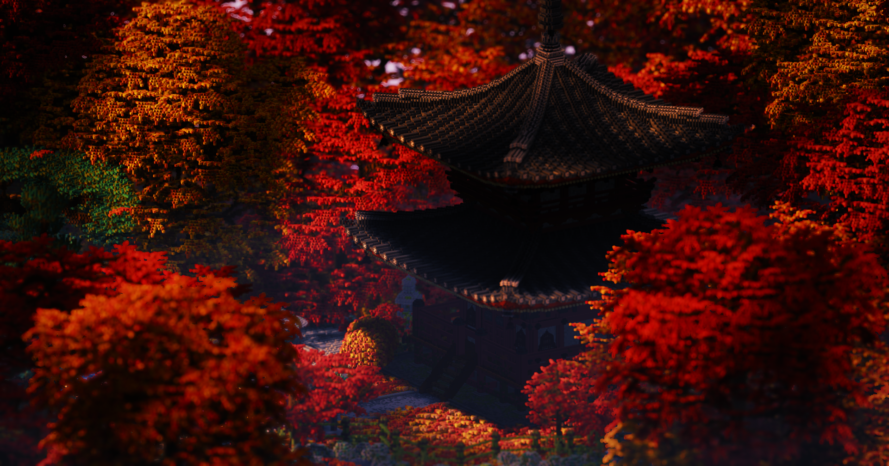

Transform Your Minecraft Experience
Minecraft shaders are the ultimate way to enhance your game’s visuals, turning the blocky world you love into a stunningly realistic landscape. With shaders, you’ll experience breathtaking lighting, dynamic shadows, vibrant colors, and realistic water effects that make your game more immersive than ever before.